我的课表 · 方案预览
北京理工大学 2026-2027 学年第一学期
都是按 iPhone 真实宽度 390px 用无头浏览器实拍出来的，不是设计稿。
当前时间：2026-10-10（第 3 周末，周六没课）。
你已拍板：默认用列表、配色用活力、列表里那行"第几周到第几周"不要。这一页已经按你的选择重新拍过了。
方案 A · 列表视图（现在默认就是这个）
一门课一行，你要的四样信息全写全了：课名 / 第几节 / 几点到几点 / 地点（周次挪到点开后的详情里）。
字大、不用放大镜；缺点是看不出"一天里课和课之间的空档有多长"。
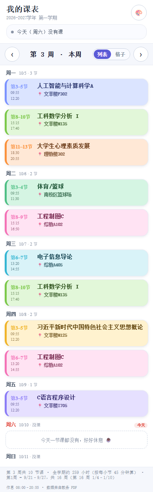
① 活力 —— 你选的，也是现在的默认
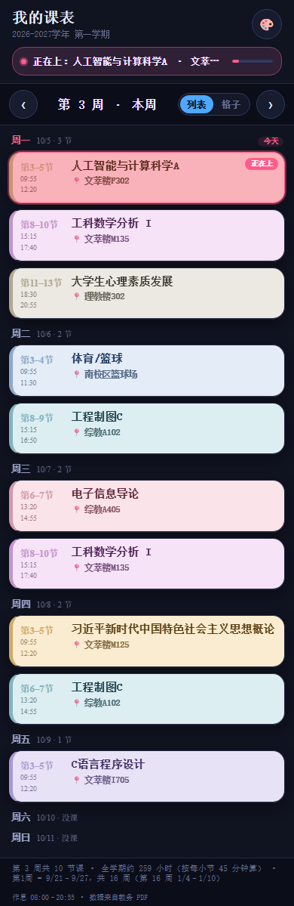
② 午夜 —— 夜里看不刺眼
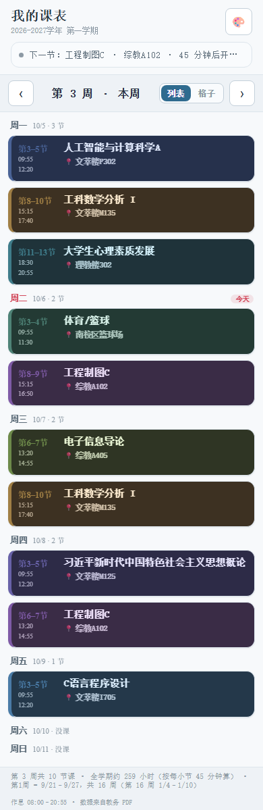
③ 北欧 —— 干净冷淡
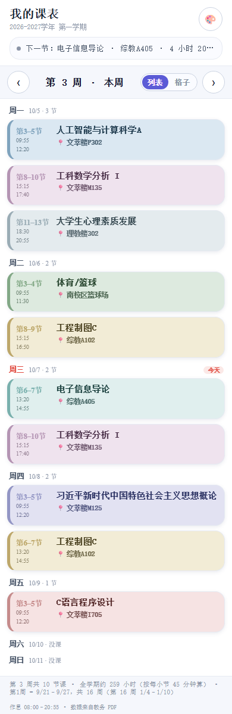
④ 活力 · 正在上课时的样子
方案 B · 格子视图（点右上"格子"切过去）
就是传统课表，一眼看整周哪天满、哪节空。
但 390px 宽下五列每列只剩 70px，课名和地点必然被截断 —— 手机上只能看个形状，要看全得点开。
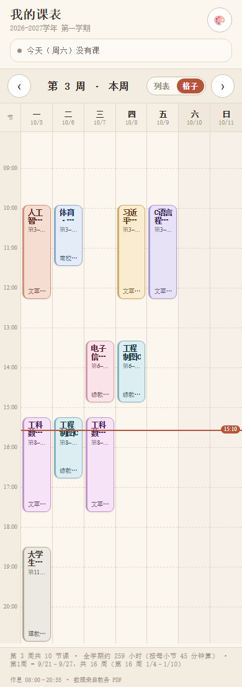
纸感 · 第 3 周整周
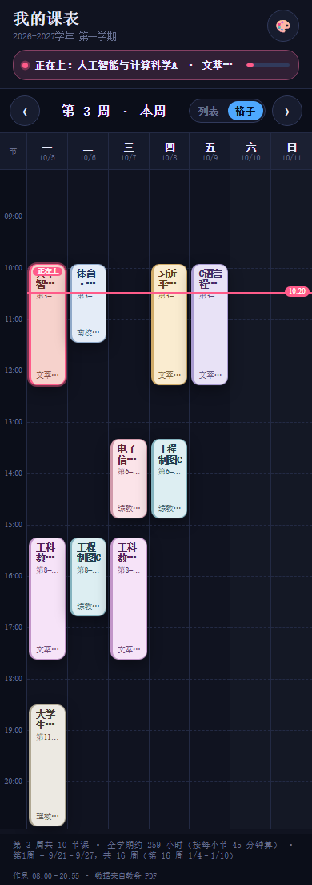
午夜 · 正在上课（红线是"现在"）
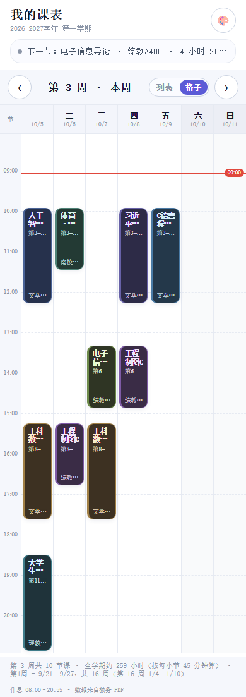
活力
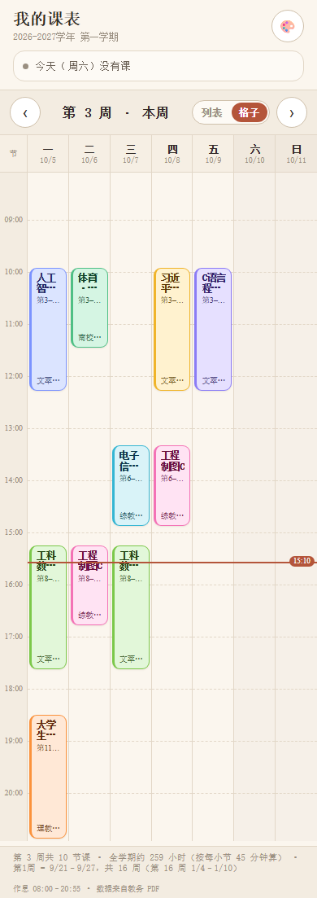
带周末 · 打开开关后多两列
细节 · 实时高亮 / 翻周 / 设置
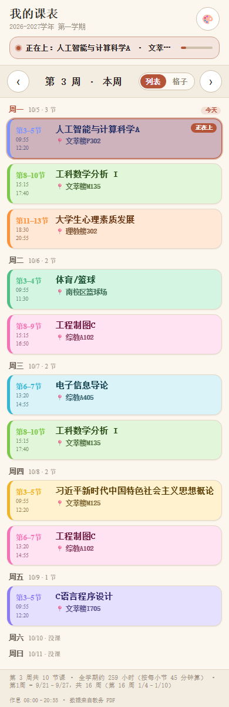
正在上的课会亮起来 + 右上角"正在上"角标
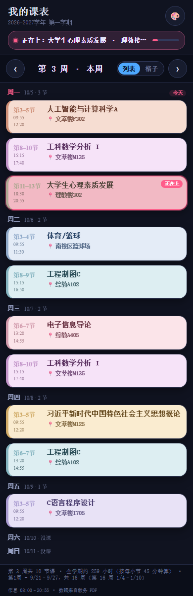
晚上 19:00：晚间课高亮
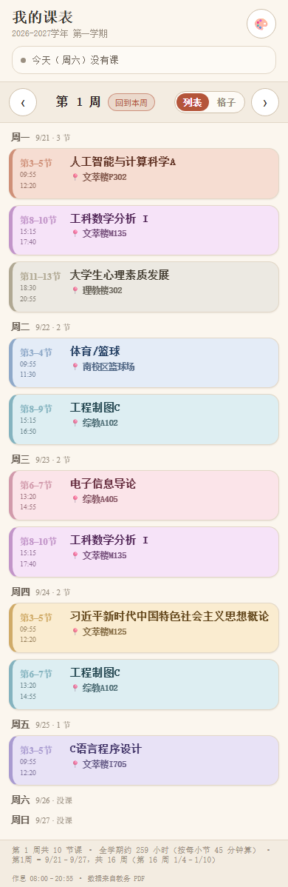
翻到第 1 周：军训周之后的第一次课
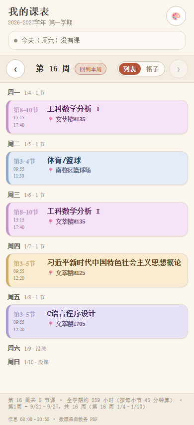
翻到第 17 周：自动提示已放假
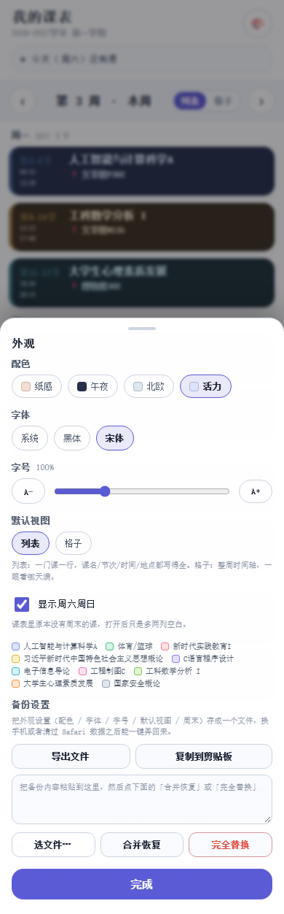
外观：4 套配色 × 3 套字体 × 字号，还能切默认视图
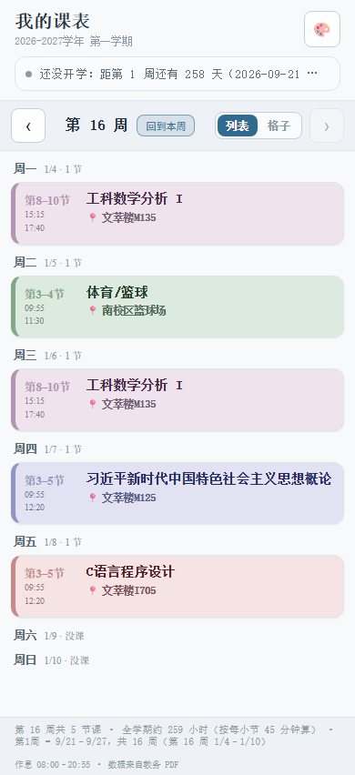
翻到第 16 周：只剩 5 节课
你已确认的三件事（已生效）：
① 默认首页 = 列表。
② 配色 = 活力（data-theme="vivid"，也同步改了 iPhone 状态栏颜色）。
③ 列表里那行"第1–11周 · 每周 3 小节" = 去掉。周次现在只在点开课程后的详情里出现。
验收（改完重跑，全绿）：逻辑测试 329/329、界面测试 259/259、交付自检 67/67、
截图自检 19/19，单文件版 北理工课表-单文件版.html 与 Pages 用的 index.html
各 89.5 KB、外部引用 0。
后来又修了三处：设置备份/恢复加好了（抽屉最下面）；换字体后导航条把"第 3 周 · 本周"截掉
（宋体/黑体比系统字体宽，现在换字体时会重新量一遍，放不下就收掉日期、绝不留半截字）；
列表里今天没课也会明说（"今天一节课都没有，好好休息"），不再是空白一片。
README 也写好了（含 iOS 安装步骤和这一路踩过的坑）。
剩下最后一步：传 GitHub Pages（需要一个 GitHub 账号 + 一个仓库）。